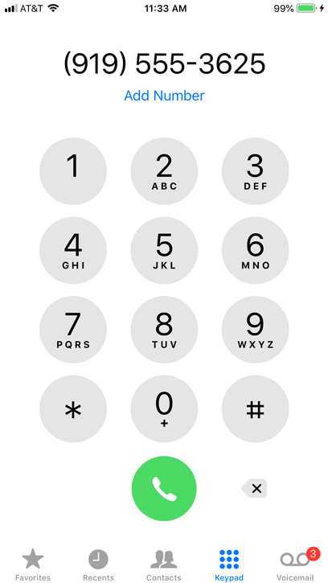
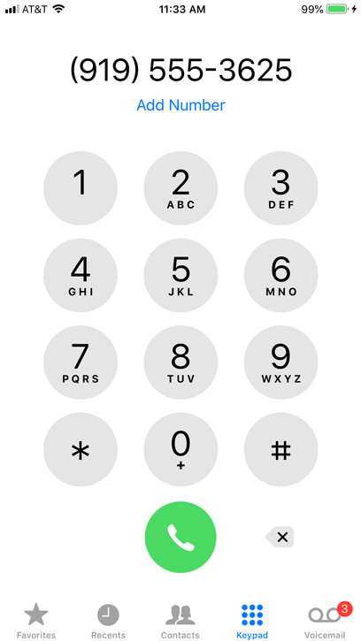

Joseph Pulla's homepage where it displays all of the information that we will be seeing once someone clicks on Joseph's profile. There will be some info where it shows what major Joseph has been studying throughout his college days and the work that he has already done that is connected to the major.
This is about the major that Joseph Pulla has been studying throughout his college days and it's called "Computer Information Systems". This is one of the hardest majors for freshmen college students to take but it will interest them since its about mathematics, technologies and computing.

Joseph Pulla's portfolio is about where it displays all of the projects that Joseph had already done in the past years of college days. The projects that Joseph has done are connected to the major that he has studied called "Computer Information Systems".


Here is where students can contact me if they want to ask me questions about the major "Computer Information Systems" or the computing projects.
 
